Education
- John P. Stevens High School, Edison NJ — Class of 2026
Research & Internships
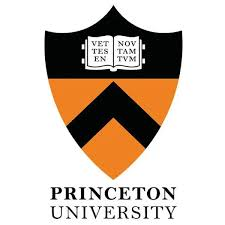
Linguistics & Biophysics Researcher
Summer Internship: Jul – Aug 2025; LLP Plus: Sep 2025 - Till datePrinceton University - Laboratory Learning Program (LLP)
Interned at the Department of Physics directly under Dr. Jason Puchalla. Worked at the Physics lab in-person - 40 hours/week for 7 weeks. Built a novel tumor segmentation algorithm. Featured twice by Princeton Science Outreach. Invited by Physics department faculty to exclusive LLPplus Program (year long). Co-founding new Princeton-backed startup based on the research work. Research work has been filed for Intellectual Property (IP) rights.
Linguistics & Deep Learning Researcher
Sep 2025 – Till dateNew York University & MILA - Quebec Artificial Intelligence Institute
Building normalizing flow datasets with Prof. Ravid Ziv. Associated to New York University & MILA - Quebec Artificial Intelligence Institute. Research work involves Info-theoretic deep learning.
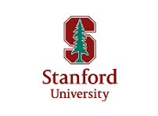
Summer AI Research Intern
Jun 2025Stanford University - Artificial Intelligence in Medicine & Imaging (AIMI)
One of 50 of 2000+ applicants chosen for internship. Interned as part of the Stanford Artificial Intelligence in Medicine & Imaging (AIMI) Research Center. Developed new pneumonia segmentation algorithm and presented to Stanford researchers and faculty.
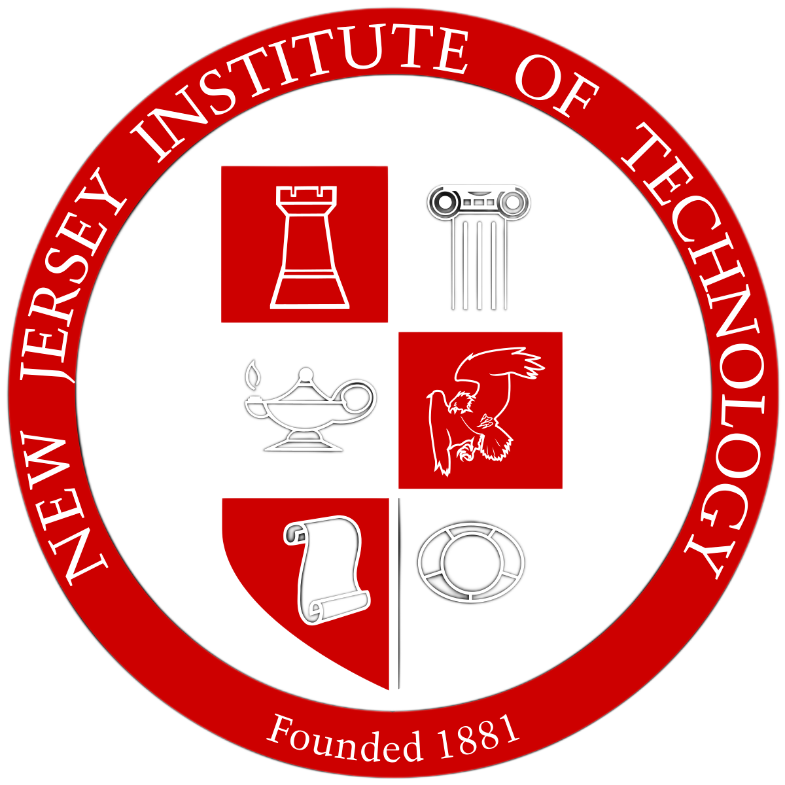
Research Intern / Reinforcement Learning
Oct 2024 - Till dateNew Jersey Institute of Technology (NJIT) – SCIIS Laboratory
Working with Asst. Prof. Xi Hu and Asst. Prof. Rayan Assaad at the Smart Construction and Intelligent Infrastructure Systems (SCIIS) Lab at NJIT. Developed novel reinforcement learning model for robotic navigation and semantic segmentation. Research paper has been accepted by The Construction Research Congress.
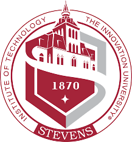
Research Intern / AI Research
Sep 2024 - Till dateStevens Institute of Technology, New Jersey
Working on a research project involving Wireless Communication using Line-of-Sight MIMO. Optimizing communication techniques involved in spatial multiplexing. Formed Stevens “Signal Seekers” Team working closely with professors and research students.
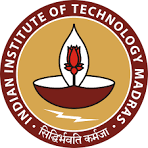
Bio-informatics Research Intern
Jun - Aug 2024Indian Institute of Technology - Madras, INDIA
Collaboration between IIT-M Biotechnology Department & Cancer Institute Chennai, INDIA. Focusing on development of a Deep Learning based framework for De-Novo Generation of Antibodies targeting Antigens for Cancer Therapy.
ML Research Intern
Jul - Sep 2023Robert Bosch Center for Data Science & AI, Indian Institute of Technology - Madras, INDIA
Research focused on the genetic dissection of complex traits, employing advanced techniques in Machine Learning and Data Science. Predicting the growth of yeast in various conditions based on the presence of mutations (single-nucleotide-variations), ontotypes, and genetic data. Worked with diverse datasets sourced from a multitude of wet-lab experiments and published materials. Developed and fine-tunined 35 different Deep Learning models aimed at accurately predicting the growth of yeast.
Publications
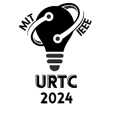
Deep Generative De Novo Design of High-Affinity Antibodies for Therapeutic Targeting of Disease-Associated Antigens
MIT & IEEE Undergraduate Research Techonology Conference, 2025
ScriptGAN: A Therapeutic Tool for Preserving and Replicating Handwriting Using Generative Adversarial Networks in Neurodegenerative and Learning Disorders
MIT & IEEE Undergraduate Research Techonology Conference, 2024

Deep generative flow network driven multi-objective molecular design for accelerating drug discovery
American Chemical Society (ACS), 2025
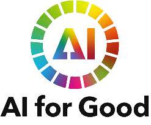
An Inclusive Deep-Generative Framework to Overcome Racial & Regional Barriers in Skin Disease Diagnosis
United Nations AI for Good Global Summit 2025, Geneva
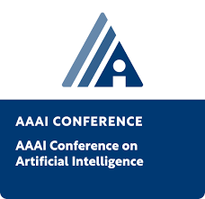
Generative Flow Networks for Lead Optimization in Drug Discovery
Association for the Advancement of Artificial Intelligence (AAAI)
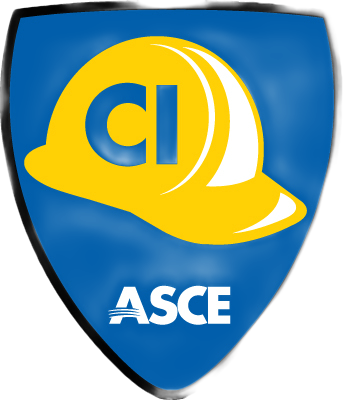
A Framework of RGB-Thermal Sensor Fusion with Zero-shot and Prompt-aware Deep Learning for Enhanced and Real-time Thermal Anomaly Detection in Buildings
American Society of Civil Engineers - Construction Research Congress
Enhancing Therapeutic Conversations with Sentiment Analysis in Natural Language Processing
Behavioral Health News
Honors & Awards
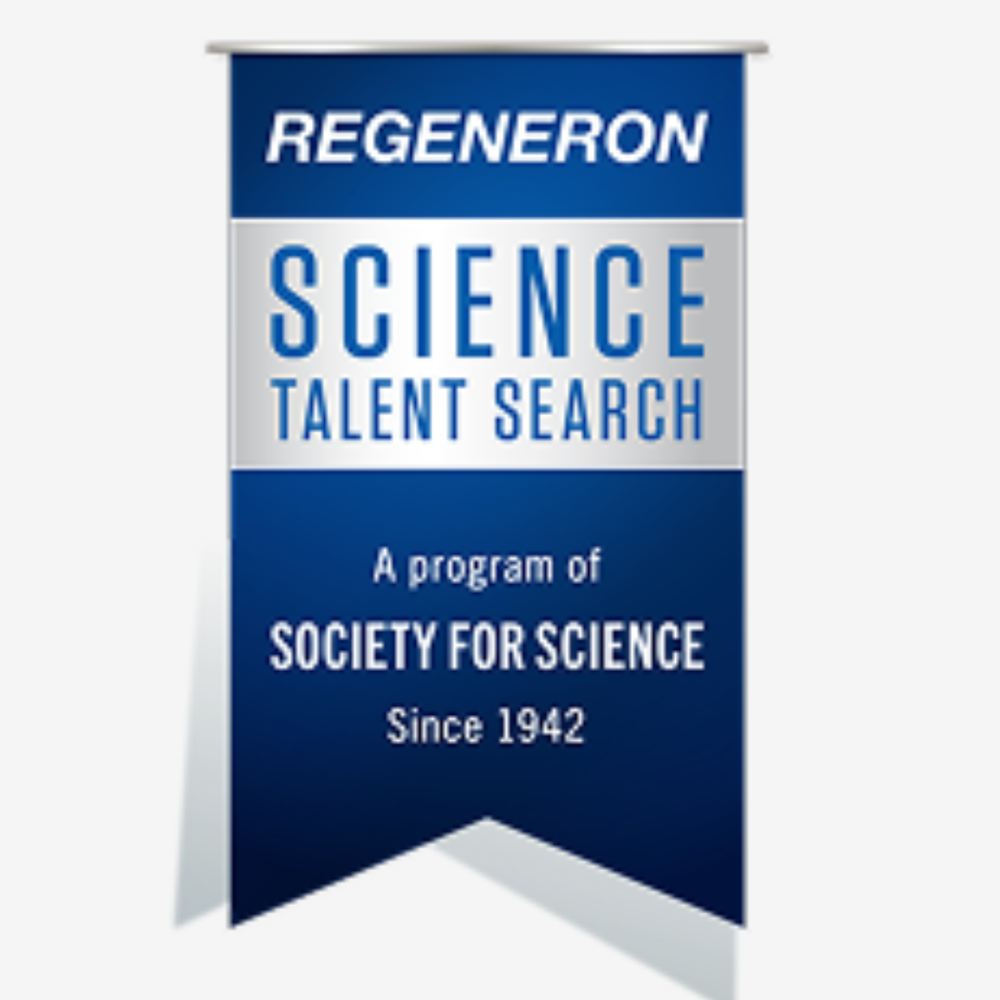
Regeneron Science Talent Search (STS) Scholar, 2026
Top 300 Scholar in the Regeneron Science Talent Search, nation’s most prestigious science and mathematics research competition for high school seniors. This honor includes a $2,000 award to both the scholar and their school, reflecting the selectivity and national significance of the achievement.
Air Force Research Laboratory (AFRL) - National Software Defined Radio (SDR) Challenge, 2024 & 2025
First High School student selected by AFRL for national research challenge. Captain for the research work at Stevens Institute of Technology on wireless communication. Formed & Lead Stevens “Signal Seekers” Team working closely with professors and research students. Selected by AFRL consecutively for the last two years (2024 & 2025). Project was shortlisted by AFRL for the National Software Defined Radio (SDR) Challenge. AFRL sponsored total of $17,000 grant (2x) of USRP Hardware to implement the projects. Worked on a research project involving Wireless Communication using Line-of-Sight MIMO. Optimizing communication techniques involved in spatial multiplexing.
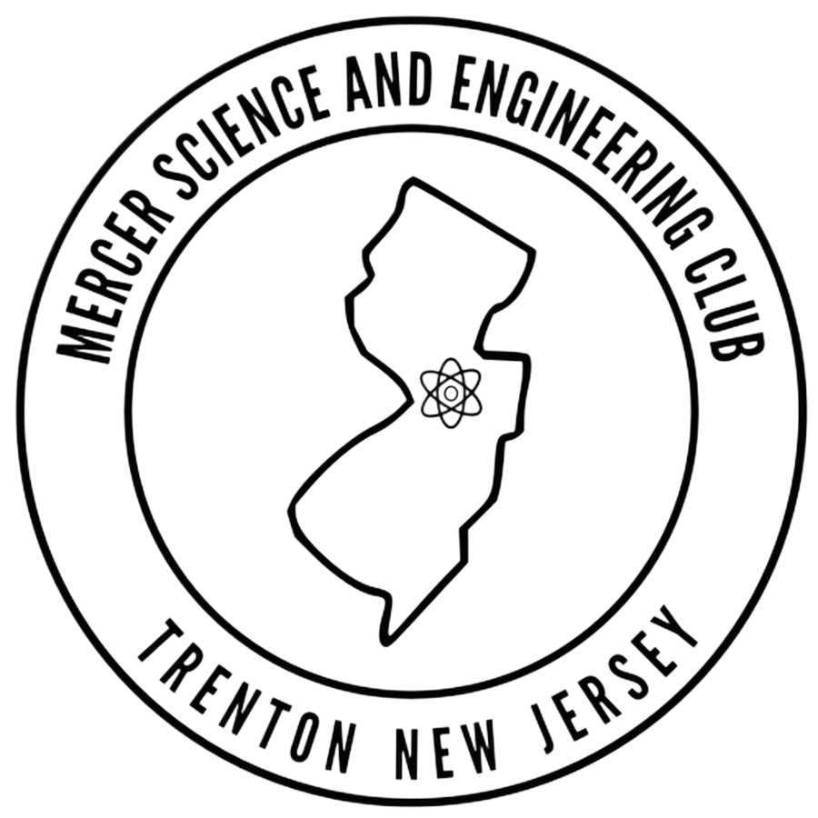
Mercer Science & Engineering Fair @ Princeton University, 2025
Won 2nd place in the Mercer Science & Engineering Fair hosted at Princeton’s CS Dept. Presented research work & poster in the competition; discussed the research topic with the panelists. Topic: Deep Generative Do Novo Design of High-Affinity Antibodies Targeting Ovarian Cancel Antigens: Adipsin and IGFBP2.

NASA International Human Exploration Rover Challenge, 2024
My team "Team Hercules" represented New Jersey at NASA’s 30th International Human Exploration Rover Challenge at the United States Space & Rocket Center (Huntsville, AL). Team was placed Top 10 Internationally in the high school division.
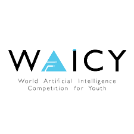
World Artificial Intelligence Competition for Youth (WAICY), 2024
Built LifeLineAI – AI Smart Watch Heart Attack Detector and short listed as international finalist. Developed life saving AI Model and integrated into Smart Watch to predict and warn users of potential Heart Attack. Tracks and analyses Myocardial Trends in EKG signals to predict cardiovascular conditions CNN & CoreML.
NASA National App Development Challenge, 2024
Founded and captained my school’s NASA Competition Team. Team was shortlisted as National Finalist for the challenge. Developed application visualizing the Artemis II mission’s real-time flight path and communication links with Earth.
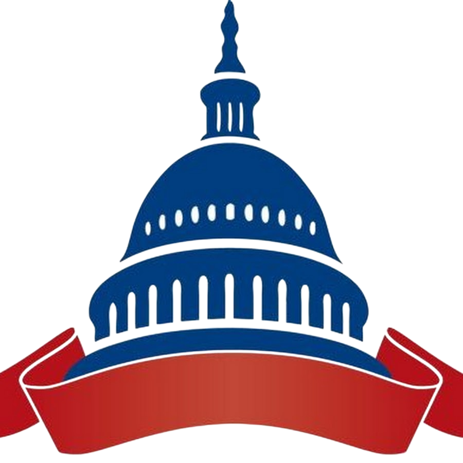
Congressional App Challenge, 2023
Built the mobile app BeyondWords - AI Reading Companion for Dyslexic Individuals. App uses AI to tackle reading difficulties faced by individuals with Dyslexia. The app won 2nd place in the “Congressional App Challenge – 2023”. Received recognition from Congressman Frank Pallone Jr.
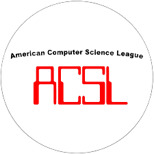
American Computer Science League (ACSL), 2022-2023
Was a high scorer in the 4 season long series of the ACSL competition for the intermediate division. National Finalist and invited to the All-Stars Competition.
Projects for Social Cause
The EquiDerm Project - AI for Social Good · Global Health Equity Initiative
The EquiDerm project is aligned with the UN Sustainable Development Goals (SDGs), particularly SDG 3 (Good Health and Well-Being) and SDG 10 (Reduced Inequalities). The EquiDerm project is based on the paper published/recognized by the UN's AI for Good Global Summit and International Telecommunications Union (ITU), showcasing its potential to advance responsible and inclusive AI in healthcare. EquiDerm emphasizes ethical AI development, transparent evaluation, and real-world social impact, with a focus on bridging healthcare access gaps through data-driven and human-centered innovation.
Small Actions - Supporting United Nation's Sustainable Development Goals
Founded smallactions.org website to promote the Sustainable Development Goals (SDG) of the United Nations and AI for Good. The smallactions.org initiative exemplifies the application of AI for Good by creating tangible links between everyday actions and the UN’s Sustainable Development Goals (SDGs). Website encourages individuals to make a significant impact through simple, everyday actions aligned with SDGs. Published many articles that translate complex global goals into understandable content, motivating informed actions from individuals.
Diagnose Mpox with just a picture
Built iOS mobile app to diagnose Mpox with the image of skin lesions. Solves Racial Bias in Skin Care through Generative image synthesis - diagnosis accuracy for underrepresented races. Addresses geographical bias, running locally on device without internet - tinyML & Deep Learning Neural Networks.
Melanoma Skin Cancer Classification with Inception-v3
Created a deep learning model partly using the Inception-v3 neural network for Melanoma classification. Accurately predicted more than 90% of real-world test data of Melanoma Skin Cancer Imaging – used Inception-v3.
Volunteering & Associations
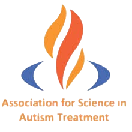
Extern
Association for Science in Autism Treatment (ASAT)
As an extern, focussed on integrating AI into international dissemination of Autism content. Published research articles; supported global dissemination of evidence-based autism resources to underserved regions. Helped expand ASAT's impact.
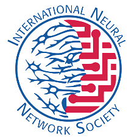
INNS Enthusiast
International Neural Network Society (INNS)
First High School Student to be accepted as a member of INNS. Persuaded the INNS leadership team to establish membership for qualified High School Students that helped introduce “Enthusiast” membership category.
Member
National Honor Society (NHS)
Inducted member of National Honor Socity since 2023.
Citations & Shoutouts
- Google Scholar - Generative Flow Networks for Lead Optimization in Drug Design (Student Abstract)
- School of Computing and Information Systems, Singapore Management University, Singapore - Hybrid-Balance GFlowNet for Solving Vehicle Routing Problems
- LinkedIn - AI in lead optimization: From Trial-and-Error to First-Try Precision
- Shoutout DFW - AI Researcher and Founder of BeyondWords AI
- Gaslighting Check - How Personalized Sentiment Analysis Supports Mental Health
Certifications & Courses
- Google Certified TensorFlow Developer (ID: 86637261)
- IBM - Python Basics for Data Science
- Stanford University & DeepLearning.AI - Machine Learning Specialization
- DeepLearning.AI - Google TensorFlow Developer Specialization
- Google Generative AI Fundamentals – Responsible AI • LLMs • Generative AI
- Microsoft Azure Cloud Computing Fundamentals AZ-900 (ID: 989975748)
- University of Alberta – Reinforcement Learning
Music
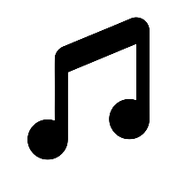
Professional Carnatic Flautist
Have been training for 11 years in Carnatic Classical Flute. Solo Concert Musician. Performed in multiple concerts. Performed for kids with special needs - Special Child Assistance Network (SCAN), Chennai, INDIA (2024) Selected as IndianRaga Fellow by MIT-founded startup IndianRaga (2025).
Clubs & Leadership
Cyberhawks Computer Science and Machine Learning Club (2024 - Till Date)
Co-president/board of the club. Taught AI & ML topics to students part of the club on the weekly sessions.
Astronomy Club (2025 - Till Date)
Co-president of the club. Lead astronomy sessions to students on the weekly gatherings.
NASA Competition Team - Founder & Captain (2024, 2025)
Captained the school team for NASA STEM Challenges.
Freshman Class President (2023)
Competed in school election. Elected as Class President during freshman year.